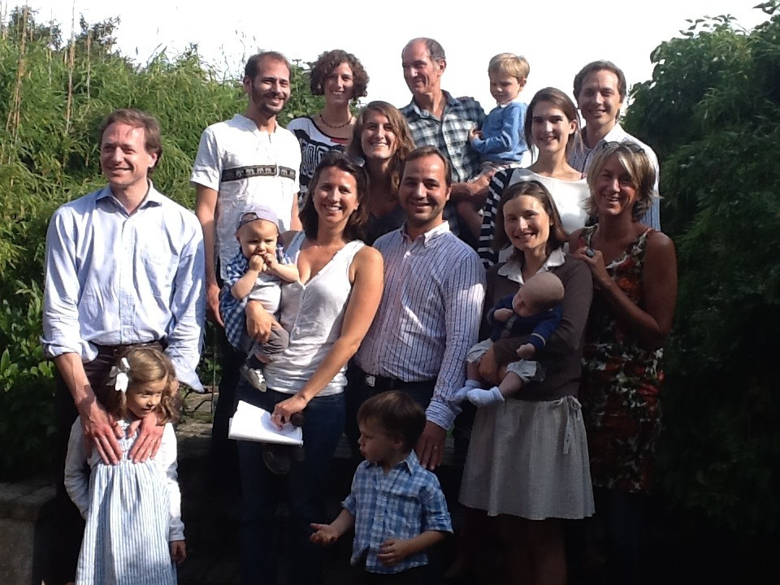
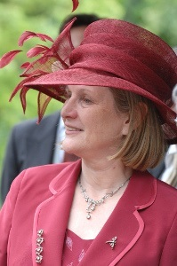
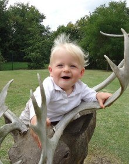

Cliquez sur les visages des membres de notre famille pour découvrir qui est qui!


Marie-Noëlle van der Mersch
(qui a pris la photo ci-dessus)
Maman de Nils
Christian Chatelle
Papa de Camille
Juliane Chatelle
Maman de Camille
Charlotte Chatelle
Soeur ainée de Camille
Dimitri van der Mersch
Frère ainé de Nils
Laetitia van der Mersch
Epouse de Dimitri et belle-soeur de Nils
Olympia van der Mersch
Fille de Dimitri & Laetitia et filleule de Nils
Ulysse van der Mersch
Fils de Dimitri & Laetitia et neveu de Nils

Achille van der Mersch
Fils de Dimitri & Laetitia et neveu de Nils
Vassili van der Mersch
Frère ainé de Nils
Isaline van der Straten Waillet
Fiancée de Vassili et future belle-soeur de Nils
Yannick Delacroix
Epoux de Marie-Charlotte et beau-frère de Nils
Marie-Charlotte Delacroix
Soeur ainée de Nils
Théodore Delacroix
Fils de Yannick & Marie-Charlotte et neveu de Nils
Roméo Delacroix
Fils de Yannick & Marie-Charlotte et filleul de Nils
Gilberte Chatelle
Grand-mère de Camille
Joseph & Suzanne Lavis
Grands-parents de Camille
Nils van der Mersch
Fiancé de Camille
Camille Chatelle
Fiancée de Nils